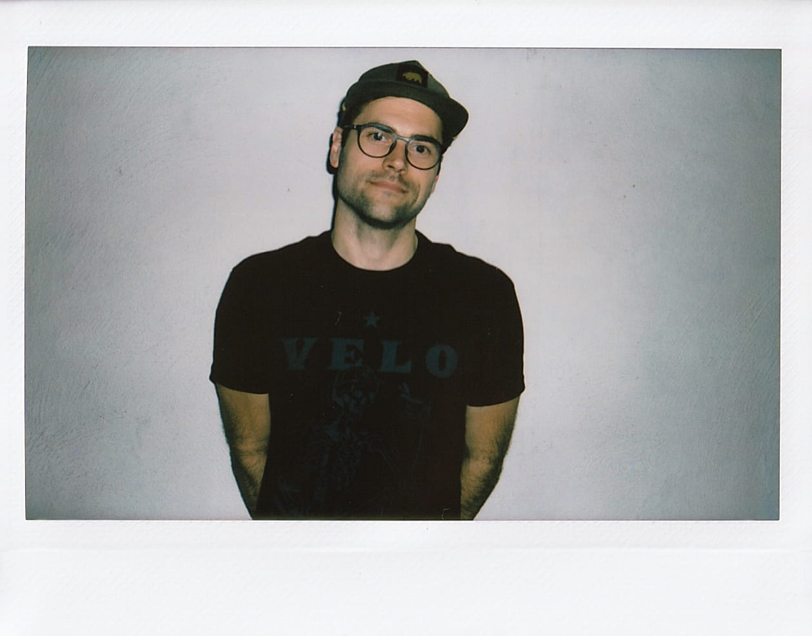

I never envisioned myself as someone who would photograph weddings. In fact, I actively avoided them for quite some time. The pressure, the responsibility… it all seemed like too much. After agreeing to photograph a wedding for a friend, I discovered there was so much more to it than I had realized. The range of emotions, the family dynamics, and the nuance of everyone’s unique story revealed a level of depth and opportunity that I previously never considered.
Born and raised in Atlanta, Georgia, I first began my creative journey as a musician. It was a huge part of my childhood, and I went on to do it professionally for nearly 15 years. While photography was always more of a hobby, I didn’t get serious about it until my wife and I were expecting our first child. To this day I still love documenting my family and our lives, and that love has carried over into documenting the lives of other families as well.
If you’re interested in working together, please reach out. Use the email or contact form above. You can still find me on Instagram, though I admittedly am trying not to spend as much time over there.